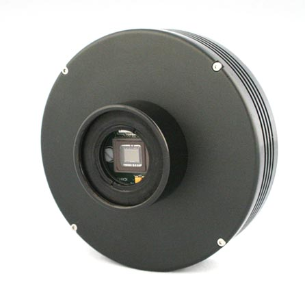

www.Astronovel.github.io
|
|
|
|
www.Astronovel.github.io |
|
Mis instrumentos de Observación
TELESCOPIO
Reflector: 250 mm / f = 4.8

Montura Dobson

Astro Ayna 2006
Aquí en una montura de horquilla, motorizada.
El ordenador (un "portátil" 486 pantalla táctil ) de la derecha controla los motores con el programa Scope, de Mel Bartels,
el de la izquierda con el programa Cartes du ciel, como maestro , controla al otro.

ATK-16IC - S (Dejo de funcionar)

Porta filtros

Montura ecuatorial ATLAS ORION


Refractor Meade ETX 70 / 350 (Montura dejo de funcionar)

Meade ETX 70 / 350 ( 2024 un poco cambiado: nuevo sistema enfoque, extensor del tubo y cola milano )
Refractor Bresser AR 102/1000 F/10

Svbony SV305

Montura Bresser motorizada, placa Arduino Uno y ASCOM.ArduinoST4.Telescope